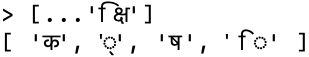
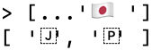

More information on grapheme clusters
More information on grapheme clusters
For more information, consult “Let’s Stop Ascribing Meaning to Code Points” by Manish Goregaokar.
Unicode is a standard for representing and managing text in most of the world’s writing systems. Virtually all modern software that works with text, supports Unicode. The standard is maintained by the Unicode Consortium. A new version of the standard is published every year (with new emojis, etc.). Unicode version 1.0.0 was published in October 1991.
Two concepts are crucial for understanding Unicode:
The first version of Unicode had 16-bit code points. Since then, the number of characters has grown considerably and the size of code points was extended to 21 bits. These 21 bits are partitioned in 17 planes, with 16 bits each:
Planes 1-16 are called supplementary planes or astral planes.
Let’s check the code points of a few characters:
> 'A'.codePointAt(0).toString(16)
'41'
> 'ü'.codePointAt(0).toString(16)
'fc'
> 'π'.codePointAt(0).toString(16)
'3c0'
> '🙂'.codePointAt(0).toString(16)
'1f642'The hexadecimal numbers of the code points tell us that the first three characters reside in plane 0 (within 16 bits), while the emoji resides in plane 1.
The main ways of encoding code points are three Unicode Transformation Formats (UTFs): UTF-32, UTF-16, UTF-8. The number at the end of each format indicates the size (in bits) of its code units.
UTF-32 uses 32 bits to store code units, resulting in one code unit per code point. This format is the only one with fixed-length encoding; all others use a varying number of code units to encode a single code point.
UTF-16 uses 16-bit code units. It encodes code points as follows:
The BMP (first 16 bits of Unicode) is stored in single code units.
Astral planes: The BMP comprises 0x10_000 code points. Given that Unicode has a total of 0x110_000 code points, we still need to encode the remaining 0x100_000 code points (20 bits). The BMP has two ranges of unassigned code points that provide the necessary storage:
In other words, the two hexadecimal digits at the end contribute 8 bits. But we can only use those 8 bits if a BMP starts with one of the following 2-digit pairs:
Per surrogate, we have a choice between 4 pairs, which is where the remaining 2 bits come from.
As a consequence, each UTF-16 code unit is always either a leading surrogate, a trailing surrogate, or encodes a BMP code point.
These are two examples of UTF-16-encoded code points:
🙂) is in an astral plane and represented by two code units: 0xD83D and 0xDE42.UTF-8 has 8-bit code units. It uses 1–4 code units to encode a code point:
| Code points | Code units |
|---|---|
| 0000–007F | 0bbbbbbb (7 bits) |
| 0080–07FF | 110bbbbb, 10bbbbbb (5+6 bits) |
| 0800–FFFF | 1110bbbb, 10bbbbbb, 10bbbbbb (4+6+6 bits) |
| 10000–1FFFFF | 11110bbb, 10bbbbbb, 10bbbbbb, 10bbbbbb (3+6+6+6 bits) |
Notes:
Three examples:
| Character | Code point | Code units |
|---|---|---|
| A | 0x0041 | 01000001 |
| π | 0x03C0 | 11001111, 10000000 |
🙂 |
0x1F642 | 11110000, 10011111, 10011001, 10000010 |
The Unicode encoding formats that are used in web development are: UTF-16 and UTF-8.
The ECMAScript specification internally represents source code as UTF-16.
The characters in JavaScript strings are based on UTF-16 code units:
> const smiley = '🙂';
> smiley.length
2
> smiley === '\uD83D\uDE42' // code units
trueFor more information on Unicode and strings, consult §20.6 “Atoms of text: Unicode characters, JavaScript characters, grapheme clusters”.
HTML and JavaScript are almost always encoded as UTF-8 these days.
For example, this is how HTML files usually start now:
<!doctype html>
<html>
<head>
<meta charset="UTF-8">
···For HTML modules loaded in web browsers, the standard encoding is also UTF-8.
The concept of a character becomes remarkably complex once you consider many of the world’s writing systems.
On one hand, there are Unicode characters, as represented by code points.
On the other hand, there are grapheme clusters. A grapheme cluster corresponds most closely to a symbol displayed on screen or paper. It is defined as “a horizontally segmentable unit of text”. Therefore, official Unicode documents also call it a user-perceived character. One or more code point characters are needed to encode a grapheme cluster.
For example, the Devanagari kshi is encoded by 4 code points. We use spreading (...) to split a string into an Array with code point characters (for details, consult §20.6.1 “Working with code points”):

Flag emojis are also grapheme clusters and composed of two code point characters – for example, the flag of Japan:

 More information on grapheme clusters
More information on grapheme clusters
For more information, consult “Let’s Stop Ascribing Meaning to Code Points” by Manish Goregaokar.
 Quiz
Quiz
See quiz app.